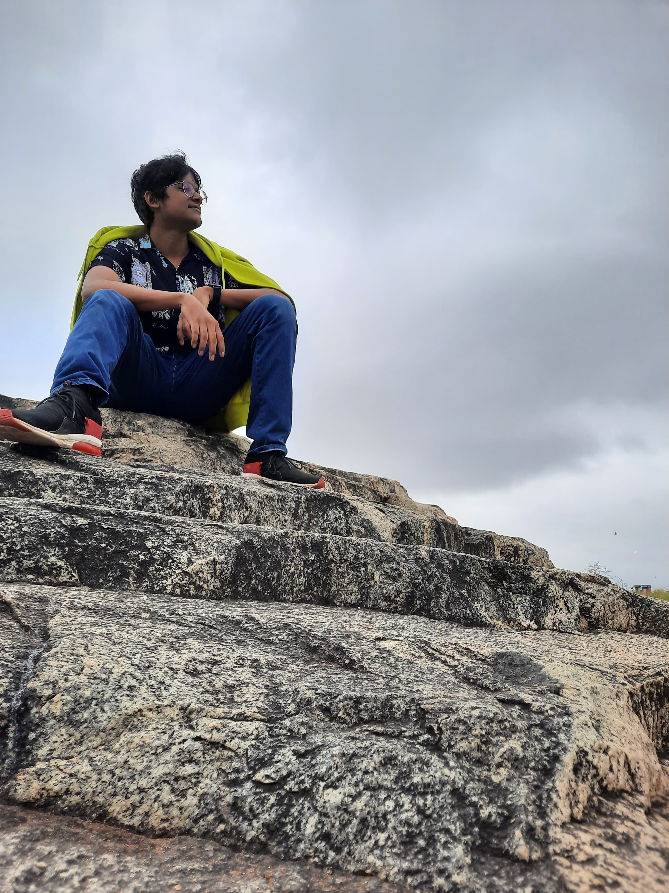

Arduino Programming
80%Sensor integration and robotics control
Abstract / Applied Physics Portfolio
I’m Shreyansh Tripathy, a Physics graduate with a B.Sc. (Honours) from Azim Premji University, Bangalore. My interest lies in applied physics, especially building and understanding efficient systems through experimentation, simulation, and careful analysis. Beyond academics, I enjoy basketball, reading comics, and continuing to learn coding.
keywords: applied physics, experimental systems, simulation, materials, efficient design

Skills
A focused blend of physics, computation, and engineering applied to real-world problems.
Tools
Sensor integration and robotics control
Data organization, visualization, and analytics
Programming
Data analysis, simulations, and numerical methods
Research
Physics simulations and data modeling
Quantum ESPRESSO, VASP, and electronic structure work
+ 1 more in this category
Communication
Report writing and presentations
Education
Experience
Hands-on experience applying physics, computation, and engineering in real-world settings.
I joined JNCASR as a Project Assistant under Prof. Shobhana Narasimhan, where I work on first-principles simulations of nanoscale materials using VASP. In... collaboration with researchers at IISER Thiruvananthapuram and a PhD researcher in the group, I am investigating the Ge/SiGe semiconductor interface to understand the formation of two-dimensional electron and hole gases at the junction. This work has strengthened my understanding of how atomic-scale variations influence emergent electronic properties relevant to next-generation device applications.
During my SURC internship at JNCASR, I worked with VASP to perform Density Functional Theory (DFT) simulations. My main project focused on reproducing... published results for CsPbBr₃ and CsPbCl₃, ensuring consistency in structural and electronic properties. Alongside this, I explored WSe₂ systems, where I gained experience in SCF convergence, band structure calculations, density of states, and charge density analysis.
Worked on robotics-focused practical learning and prototyping as part of the internship program.
Certificates
Recognition of skills and accomplishments across various domains.
JNCASR
Azim Premji University
Azim Premji University
Teachnook
Projects
A showcase of my research endeavors and development projects.

Built a Michelson interferometer to observe interference due to controlled path differences.

Used schlieren imaging to visualize sound waves, heat, smoke, and related density changes in air.

Explored electrically, magnetically, hydraulically, and osmotically responsive soft actuators.
Journey
A chronological view of my academic and professional growth.
Internship
Aug 2025
Internship
Jul 2025
Education
May 2025
Project
Oct 2024
Project
Mar 2024
Internship
Aug 2023
Project
Mar 2023